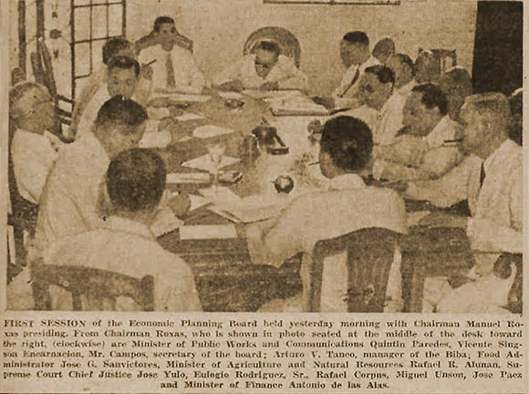

|
j
a v a s c r i p t |
April 12, 1944
Tribune: "Public Should Help Government Solve Food Problem — Roxas." I have it from an unimpeachable source that Roxas had no advance notice he was to head the EPB. On the radio last night, he said: I heeded the call because I believe that no Filipino can decline, under the circumstances now prevailing, to do what lies in his power to ameliorate the sufferings of thousands of people due to the insufficiency or maldistribution of food supplies.

EPB Members Smoke Out Solutions
Page 1: "Japs storm two foe strongholds.... Campaign against trapped 20th Division near climax — fall of Palel imminent" — the third axis of attack on Imphal. "Britain admits fall of Kohima" — from Lisbon according to a Delhi dispatch — doesn't square with the facts. Meanwhile, Commentator is gloating all about it and predicting all sorts of dire consequences for the British. In last night's incident, "bandits" took one man from Trabajo Street away with them. In another incident, the Japanese caught one guerilla, tied him to a wall and later bayoneted him to death. The snitcher is in hiding — guerrillas posted his name along with a death sentence. One or two days ago, a Japanese couple went out visiting, and returned to a house cleaned out of everything! but a small table model radio. La Vanguardia reports on "Horse Day" today — Mrs. Figueras won a cup. It's a bad joke. Everyday one sees underfed and overloaded horses with sores pulling their loads. A banner Mango crop is in the making. Prices have declined from P5 to P1 a mango. Our tree is full of flowers and so are mango trees everywhere. No rain or strong winds are the requirements for a bountiful crop. Banana and papaya trees are being planted in the thousands. Barring early typhoons, we won't go short of fruit. The Japanese have begun to BUY again. No doubt this was made possible by a new shipment of money, cases of which were seen being opened yesterday at the Taiwan Bank. |
|
|
|
|